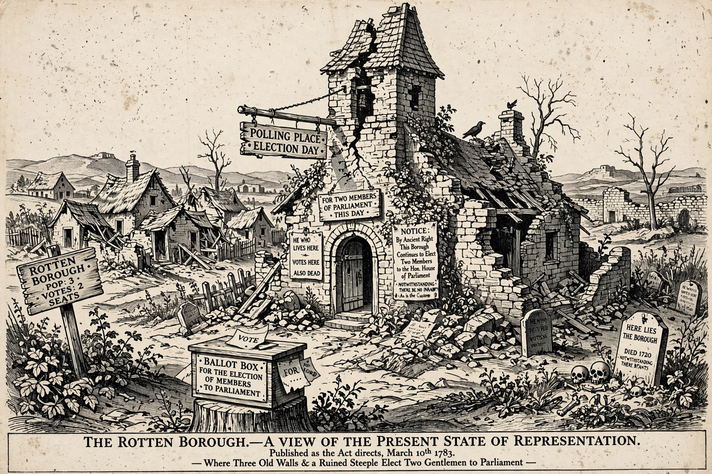

| Also called | Pocket borough, nomination borough |
|---|---|
| Abolished | Reform Act 1832 (mostly) |
| Example | Old Sarum, Dunwich |
A rotten borough, also known as a pocket borough, was a parliamentary borough in England, Great Britain, or the United Kingdom with a very small electorate that could be used by a patron to gain unrepresentative influence in the House of Commons.
Many boroughs chartered in medieval times declined to villages or disappeared (Dunwich fell into the sea) yet still elected two MPs, while growing industrial cities like Manchester and Birmingham had none. Old Sarum, with about seven voters and no resident population, was the emblematic case. Patrons — landowners or the government — effectively chose the MPs.
The Reform Act 1832 disenfranchised 56 rotten boroughs and redistributed seats, a process continued by later reform acts that established more uniform constituencies. The term is still used for safe or manipulated seats. See Robert Walpole, who managed such boroughs, and Rump Parliament.